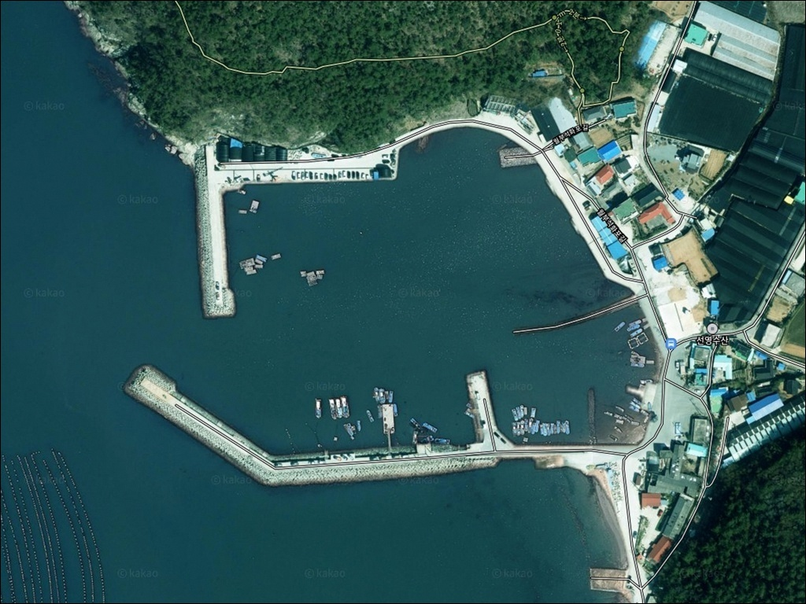
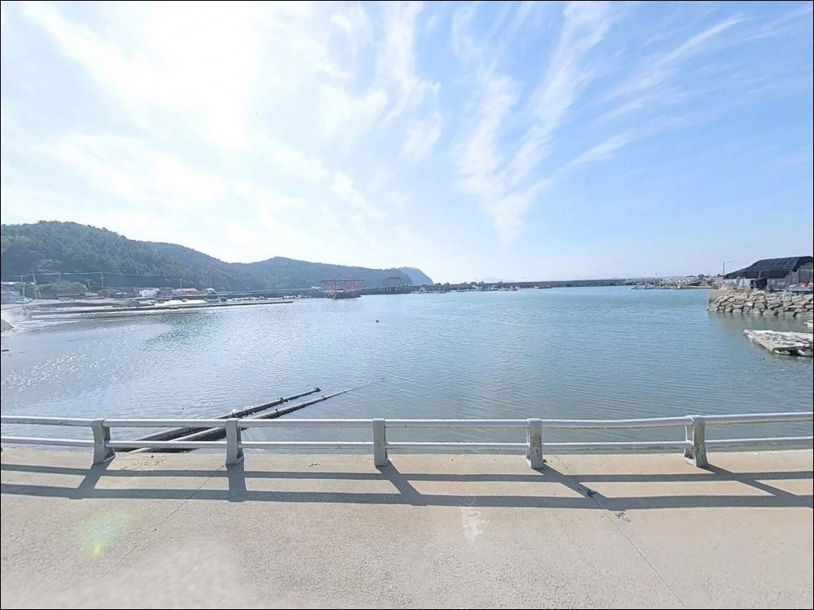
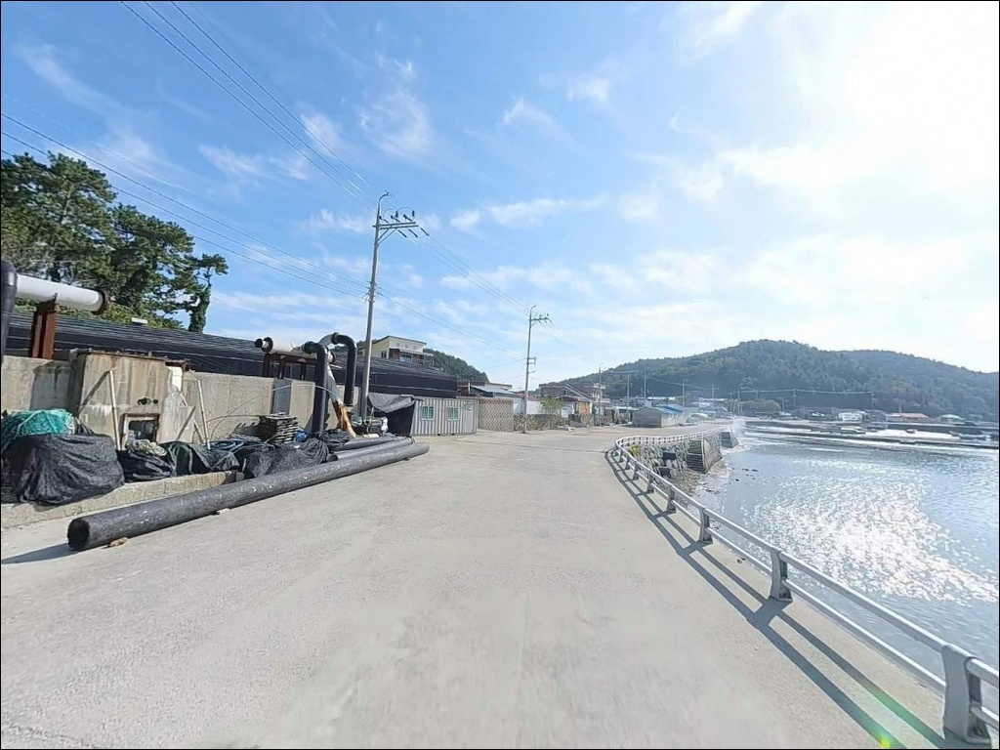
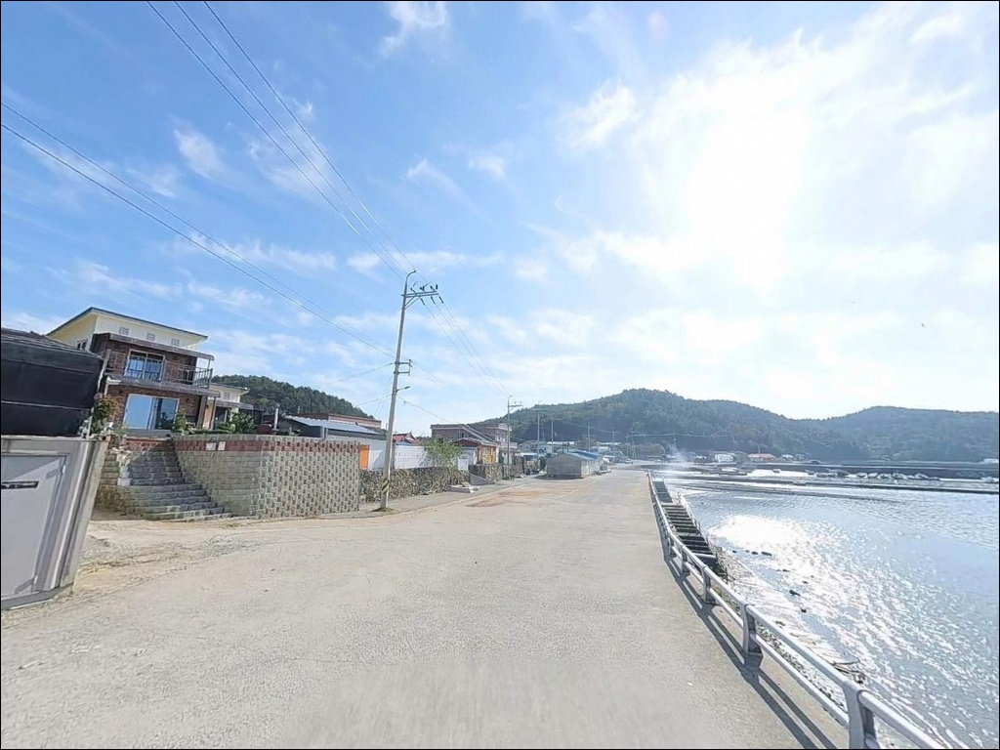
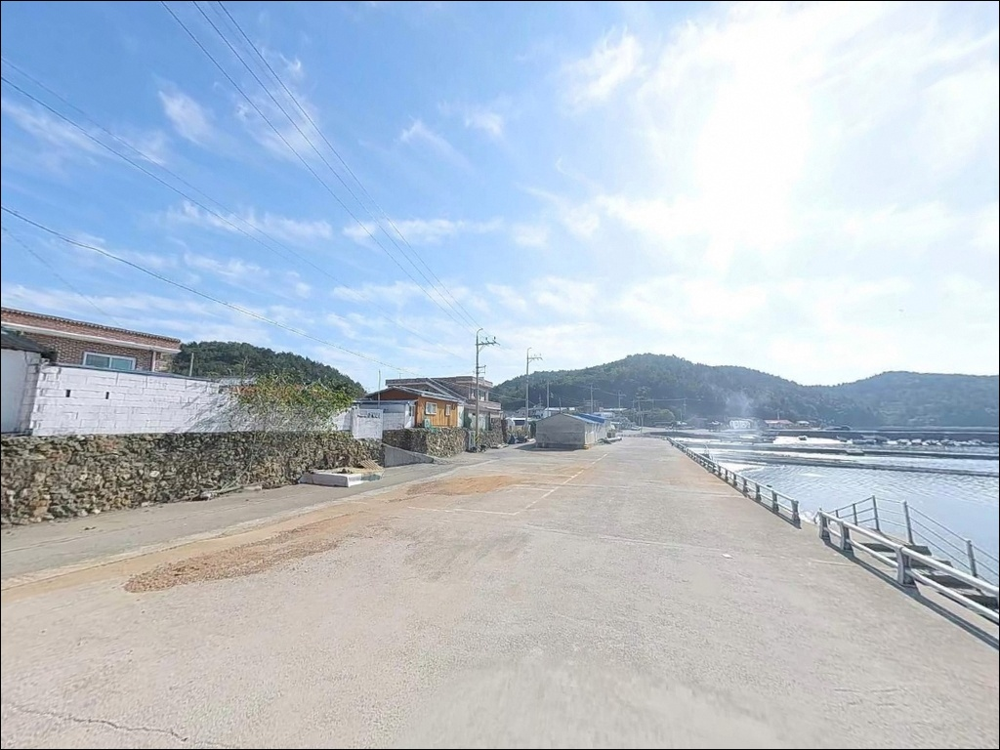
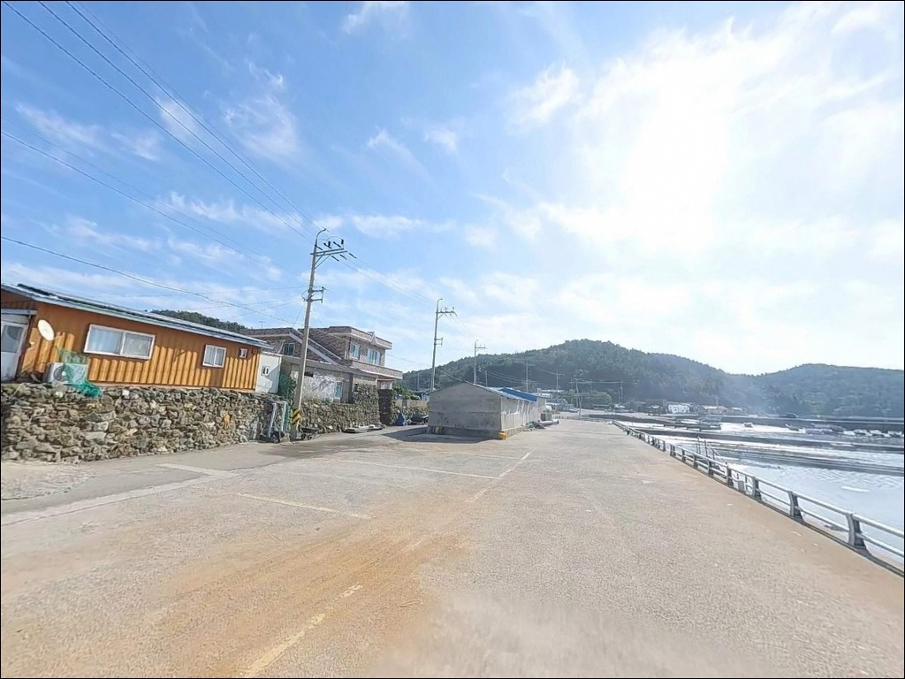
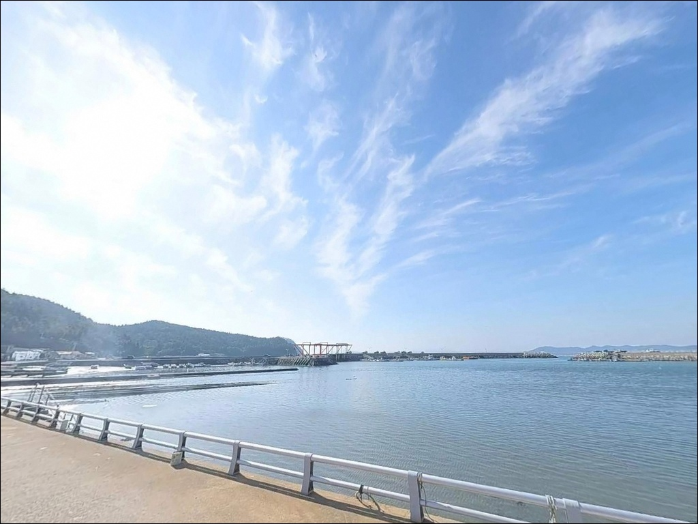
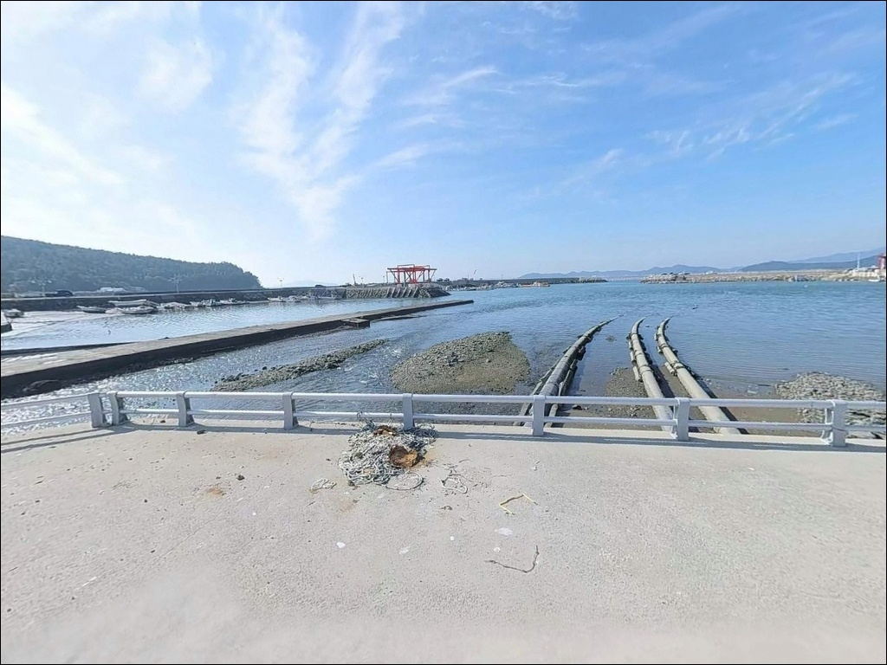
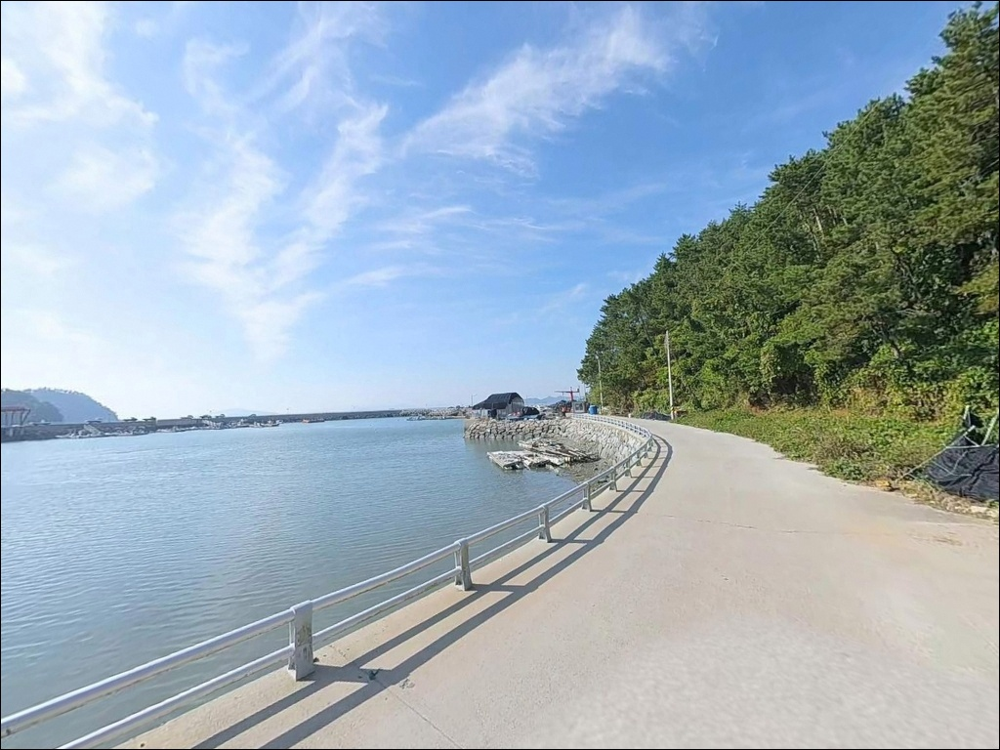

이 페이지에는 광고(제휴 링크 포함)가 있으며, 광고 링크를 통해 구매하면 운영자가 판매 수익 또는 수수료를 받을 수 있습니다. 포인트 사진: 카카오맵 스카이뷰·로드뷰. 이 페이지의 지도·사진 이미지는 카카오맵의 실제 서비스 이미지와 다를 수 있습니다.

석화포방파제
전남 완도군 신지면 월양리 1981-6
석화포방파제 외항 끝단은
조류가 직접 통과하는 구간이라,
사리 전후에는 어떤 채비를 써도
흘러버리는 강도의 물살이 형성됩니다.
조금 타이밍이나 정조 전후를 놓치고 입장하면
끝단까지 걸어갔다가
채비도 제대로 펴지 못하고 돌아서는 상황을
맞닥뜨립니다.
이 글은 석화포방파제의
진입 동선, 차박 여건,
지형별 낚시 방식 적합성에 집중합니다.
조황 단정과 특정 어종 보장은
이 글의 범위에 포함되지 않습니다.

신지도는 완도읍에서 신지대교로 연결되는 섬이다.
신지대교를 건넌 뒤 77번 지방도를 따라 이동하면
신지도 서쪽 월양리 방면에 닿는다.
포인트까지 이어지는 도로는
포장 구간으로 연결되어 있어
차량 진입 자체에 큰 어려움은 없는 편입니다.
방파제 입구까지 이어지는 해안 소도로는
폭이 좁아지는 구간이 있지만,
대형 카라반이나 캠핑카도 진입이 가능한 수준의 도로입니다.
초행이라면 출발 전 위성지도로
해안 구간 도로 폭을 미리 확인해 두는 것이 안전합니다.
방파제 입구 공터와 선착장 공간에서
회차가 가능합니다.
주차는 방파제 시작 지점 좌측 공터와
선착장 측면 공간을 활용하는 방식이 기본이며,
어선 접안 동선을 막지 않는 자리를
먼저 확인하고 주차하는 것이 기본 매너입니다.

월양리 서쪽 해안은 주거 밀집도가 낮은 어촌 마을입니다.
야간에는 차량 통행이 적고
민가와 어업 시설이 혼재된 구조지만
차박 프라이버시는 양호한 편입니다.
방파제를 따라 가로등이 설치되어 있어
야간 낚시와 차박 대기를 병행하는 데
기본 조명 여건은 갖춰져 있습니다.
단, 방파제 끝단까지는 조명이 미치지 않는 구간이 있어
개인 헤드랜턴은 반드시 챙겨야 합니다.
외항 방향이 해협 쪽으로 열려 있어
기상에 따라 바람이 직접 들어오는 구조입니다.
바람이 강한 날에는 차량 방향을 고려해
주차 자리를 잡는 것이 좋습니다.
어선의 새벽 출항이 이른 시간부터 시작되는 어항 특성상,
야간 낚시 후 차 안에서 쉬는 중에도
이른 새벽 작업 소음이 발생할 수 있습니다.
차박 거점으로 삼기에는 실용적인 여건이지만
이 점은 미리 감안하고 일정을 짜는 것이 좋습니다.

신지면 소재지 방면으로 이동하면
마트와 식당가, 주유소를 이용할 수 있는
생활 인프라가 갖춰져 있습니다.
완도읍은 신지대교 기준 약 5~8km 거리로,
대형 마트, 편의점, 낚시용품점이
집중된 시가지가 위치해 있어
출조 전 소품 보충에 활용하기 좋습니다.
포인트 바로 인근에서 편의시설을 기대하기보다는
출발 전 완도읍이나 신지면 소재지에서
필요한 물품을 갖추고 진입하는 방식이 현실적입니다.
식수, 얼음, 여분 채비는
진입 전에 미리 준비해 두는 것이 원칙입니다.
응급 상황 발생 시
완도군 의료원이 신지대교 경유 약 10km 이내에 위치합니다.
거리가 있는 만큼 출발 전
비상약품과 연료 상태도 확인해 두는 것이 좋습니다.

이 포인트에서 가장 먼저 확인할 것은 물때입니다.
완도 신지도 해역은 조류 흐름이 강한
완도권 특성을 그대로 가지고 있으며,
사리 전후에는 방파제 끝단에서
조류가 세게 형성됩니다.
바다타임에서 신지면 기준 물때를 확인하고,
조금 전후나 정조 타이밍에 맞춰
출발 시각을 조율하는 것이 기본 전략입니다.
외항 테트라포트 구간은
이끼로 인해 미끄럼 위험이 높은 편입니다.
논슬립 낚시 신발 착용은 기본이며,
방파제 위에서는 구명조끼를 상시 착용해야 합니다.
야간 낚시 계획이 있다면
헤드랜턴과 보조 조명을 반드시 준비합니다.
어선 출입항 방향으로 낚싯줄을 던지지 않는 것이 기본 매너이며,
낚싯줄과 바늘 등 낚시 쓰레기는 전량 수거해 귀가합니다.
출조 전 최신 조황은
"신지도 방파제 조황" 또는 "완도 신지면 낚시"
키워드로 직접 검색해 확인하시기 바랍니다.

석화포방파제는 남동쪽 방향으로 길게 뻗은
일자형 방파제 구조입니다.
외항 쪽은 테트라포트로 쌓여 있고,
끝단은 직벽 형태로 낚시가 가능한 구조입니다.
방파제 중간을 지나 끝단으로 갈수록
수심이 점진적으로 깊어지며,
만조 기준 끝단 수심은 5m에서 9m 수준으로
수심 급변 구간이 끝단 인근에 형성됩니다.
바닥 저질은 모래와 여밭이 섞인 혼합 지형이며,
내항 쪽은 모래 위주의 평탄한 저면이 이어집니다.
석화포(石花浦)라는 지명이 시사하듯
방파제 인근 저면에는 암반 지형이 포함되어 있어,
외항 끝단과 테트라포트 경계 구간은
어류의 은신처가 자연스럽게 형성된 구조입니다.
완도 신지권 해역은 조류 흐름이 일정하게 발생하는 구간으로,
방파제 끝단에서는 측면으로 흐르는
조류 영향을 직접 받습니다.
조류가 흐르는 구간은 어종의 회유 길목 역할을 하며,
이 일대에서 기대해 볼 수 있는 어종은
감성돔, 볼락, 농어, 갑오징어이고,
내항 모래 지형에서는
도다리, 보리멸 계열도 기대해 볼 수 있는 구조입니다.
출조 전 최신 조황은
"석화포방파제" 또는 "신지도 방파제 낚시"
키워드로 꼭 검색해 보시기 바랍니다.

이 포인트에서 가장 기본적인 낚시 방식은
감성돔을 노리는 찌낚시(릴찌낚시)입니다.
외항 테트라포트 구간과 끝단에서
조류 흐름을 따라 반유동 채비를 흘리는 방식이
이 지형 조건에 잘 맞습니다.
조류가 안정되는 조금 전후나 정조 타이밍이 유효하며,
완도 동쪽 신지권은 6월에서 11월이
감성돔·볼락의 주요 시즌 구간입니다.
에깅이란 갑오징어·무늬오징어를 대상으로
에기(인조 미끼)를 사용하는 루어낚시 방식입니다.
가을 시즌 내항과 방파제 끝단에서
갑오징어 반응이 기대되는 구조이며,
수심층에 따라 에기 호수와 운용 방식을 조절하는 것이
이 포인트 에깅 공략의 기본입니다.
원투낚시는 내항 모래 지형을 공략하는 데 적합합니다.
청갯지렁이나 오징어살을 미끼로 활용해
도다리, 보리멸 등 바닥 어종을 노리는 방식이
이 지형 구조에 맞습니다.
조류가 느려지는 정조 타이밍에
채비를 멀리 내보내 바닥을 탐색하는 것이
유효한 접근입니다.
루어낚시는 방파제 끝단에서
조류 흐름을 활용해
미노우나 웜 계열 루어로 공략하는 방식입니다.
농어를 기대해 볼 수 있는 구조이며,
조류가 살아 있는 시간대에 끝단에서
조류 방향으로 캐스팅 후 자연스럽게 흘리는
패턴이 어울립니다.

석화포방파제 조류가 너무 강하거나
자리 여건이 맞지 않을 때
가장 먼저 고려할 수 있는 대안은
신지도 내 강독방파제입니다.
신지도 북측에 위치하며
석화포와 유사한 조류 흐름을 가진 구조로,
당일 동선 내에서 플랜B로 묶어두기 좋은 자리입니다.
동고항 방파제와 방죽포항은
신지도 동쪽 해안에 위치한 대안 포인트입니다.
거리는 각각 약 5~6km 내외로,
이 일대 신지권 방파제 특성을 공유합니다.
석화포를 처음 탐색하는 날이라면
동고항이나 방죽포항을 다음 동선으로
함께 계획해 두는 것이 효율적입니다.
차박 공간이 더 넓게 필요하다면
신지 명사십리 해수욕장 제2주차장이
대형 주차 공간과 편의시설을 갖춘
대안 차박지입니다.
낚시 포인트로서의 여건은 석화포 쪽이 낫지만,
숙영 공간 확보가 우선이라면
명사십리 제2주차장을 거점으로 삼고
이동하는 동선도 고려해 볼 만합니다.

감성돔 찌낚시나 갑오징어 에깅을 즐기는 낚시인에게
석화포방파제의 외항 끝단 조건은 잘 맞는 구조입니다.
수심 있는 끝단과 테트라포트 경계,
흐르는 조류가 복합 공략을 가능하게 합니다.
정조 타이밍에 내항 모래 지형을 원투로 탐색하거나
루어로 끝단을 공략하는 낚시인에게도
선택지가 다양한 포인트입니다.
반면 물때 확인 없이 사리 전후에 방문하거나,
진입로 사전 확인 없이 들어갔다가
좁은 구간에서 난감해지는 경우는
충분히 예방이 가능한 상황입니다.
물때 확인, 진입로 점검, 완도읍에서의 사전 준비,
이 세 가지가 이 포인트 방문을 완성하는 조건입니다.
가로등이 들어오는 방파제 옆에 차를 세우고
조류 타이밍에 맞춰 찌를 흘리며 하룻밤을 버티는
완도 신지도식 차박 낚시의 맛을
이 포인트에서 제대로 만날 수 있습니다.